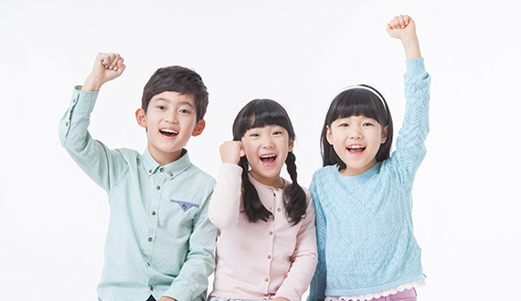
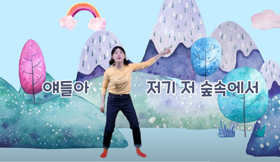
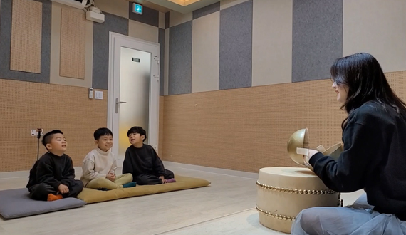
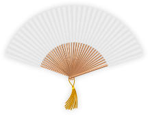
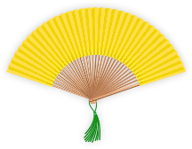
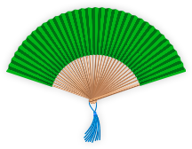

교육안내
-
01
풍류사운드 교육은 다릅니다.
풍류사운드 교육은 아이를 향한 '믿음'을 원칙으로 합니다.
아이들과 눈을 맞추며 언어를 이해하는 것이 교육의 시작입니다. 아이도 부모님도 미쳐 몰랐던 아이의 무한한 잠재력을 발견합니다. 아이 스스로 자신의 한계를 뚫고 나올 때 이끌어주며 응원해 주는 교육을 풍류사운드 교육이라 합니다.
-
02
풍류사운드의 노하우를 담았습니다.
20년 교육 베테랑의 교육 노하우! 2만 누적 레슨 경험으로 다져진 '당찬아이 메이커 당찬언니'의 독보적인 교육을 제공합니다. 이 교육을 '리더 보이스' 교육이라고 합니다. '리더 보이스'란 리더들이 공통적으로 가지고 있는 울림 있고 전달력이 좋은 발성법으로 '당찬언니'만의 '판소리 교육' 입니다. 풍류사운드 회원 98%의 재등록률이 말해주듯 소심한 아이도 평범한 아이도 '당찬아이'로 바뀌는 최적의 교육 노하우입니다.
 -
03
권위적이지 않은 즐거운 교육을 지향합니다.
풍류사운드 아이들의 수업 후의 모습은 개운해 보입니다.
올바르게 소리 내며 가슴이 뻥 뚫린 것과 같은 체험을 합니다.
아이들의 연령에 맞춘 판소리 10곡을 선곡하여 6단계의 레벨을 두었습니다.
10곡 모두 트랜디한 반주와 좌우뇌 개발 특허 교재, 미디어 교육자료를 갖추고 있습니다. 판소리 구연동화, 판소리 체조, 판소리 율동, 등으로 연령에 딱! 맞춘 캐주얼한 교육을 제공합니다. 아이들 스스로 가정에서 부르며 부모님이 즐겁고, 취미와 특기가 생김으로 인해 아이도 즐겁습니다. -
04
성공을 습관으로 만드는 교육 시스템 제공
한 달에 한 곡을 배우며 매달 영상 승급 심사, 3개월에 한번 대면 승급 심사, 6개월에 한번 정기발표회에 참여합니다. 흰 부채에서 검은 부채까지 '당찬아이 마스터 과정'은 약 3년이 소요됩니다. 작은 성취감에서부터 커다란 포부까지 경험하며 성공이 습관이 되는 '당찬아이'로 성장하도록 돕습니다. 체계적인 커리큘럼으로 '당찬아이'로 성장하는 추억과 가치를 전해드립니다.

풍류사운드 승급부채 구분표
-
레벨 : Basic
부채 : 흰부채
심사 : 1곡
-

레벨 : 1-2
부채 : 흰부채+노리개
심사 : 3곡 중 2곡
-
레벨 : 2
부채 : 노랑부채
심사 : 3곡 중 2곡
-

레벨 : 2-2
부채 : 노랑부채+노리개
심사 : 3곡 중 2곡
-
레벨 : 3
부채 : 초록부채
심사 : 3곡 중 2곡
-

레벨 : 3-2
부채 : 초록부채+노리개
심사 : 3곡 중 2곡
-

레벨 : 4
부채 : 파랑부채
심사 : 3곡 중 2곡
-
레벨 : 4-2
부채 : 파랑부채+노리개
심사 : 3곡 중 2곡
-
레벨 : 5
부채 : 빨강부채
심사 : 3곡 중 2곡
-
레벨 : 5-2
부채 : 빨강부채+노리개
심사 : 3곡 중 2곡
-
레벨 : 6
부채 : 검정부채
심사 : 3곡 중 2곡
온라인 교육안내
자유롭게 언제 어디서나
부모님과 함께 공감할 수 있는 환경을 만들고 싶었습니다.
함께 칭찬해 주고 성장을 응원해 주며 나누고 싶었습니다.
많은 교육 노하우를 통해 소리를 내는 활동은 큰 공간이 필요하지 않다는 것을 알게 되었고 부족함 없이 전달할 수 있다는 확신이 있습니다.
오랜 노하우가 담긴 당찬 아이 메이커 당찬언니의 노하우를 우리 아이 '자신감 코치'에게 가정 내에서 손쉽게 배울 수 있습니다.
영상 교육 듣는 방법

풍류사운드는 온라인 영상 듣기. 나의 연습 영상전송. 선생님 피드백. 실시간 1:1 영상 레슨의 단계를 거치며 수업을 진행합니다.
영상 전송은 여러 번 반복하여 들을 수 있다는 장점이 있고 리스닝 속도를 보다 탄탄하고 빠르게 성장시켜 줍니다.
자신의 모습을 찍어보내는 과정을 통해서 메타인지를 향상시켜주며 나를 보는 데에 나를 보여주는 데에 자연스러운 아이로 성장합니다.
선생님의 피드백과 실시간 1:1레슨으로 더욱 성장할 수 있는 코칭을 전달하며 잠재력과 흥미를 이끌어줍니다.
언제 어디서나 우리 아이 '당찬아이'로 바꿔 줄 우리 아이 만의 '자신감 코치'를 만나보세요.
온라인 수업과정 안내
온라인 수업은 개인 레슨 주 1회 25분 기준으로 진행됩니다.
10분은 영상을 전송하여 익히며, 15분은 선생님과 실시간 1:1 수업을 통해 진행됩니다.
오프라인 교육안내
- 소그룹 5:1
- 유아부와 초등 저학년에게 최적화된 수업입니다.
풍류사운드 '자신감 코치'의 육성을 들으며 또래 친구들과 함께 수업합니다.
소그룹에 특화되어있는 판소리 체조, 판소리 율동 수업, 발표와 토론 수업을 함께 '리더 보이스'를 익힙니다.
함께 했을때 시너지가 좋은 아이이들에게 인기가 높은 수업입니다.
소그룹의 특성으로 디테일한 지도와 다 함께하는 놀이식 수업까지 소그룹 수업의 장점을 최대한 누리실 수 있습니다.
- 개인 1:1
- 니만의 자신감 코치에게 세심한 케어를 받을 수 있습니다.
아이의 속도에 맞춰서 진도가 나가기 때문에 효율적인 수업이 가능합니다.
선생님과 눈을 맞추며 오롯이 나의 목소리에 집중할 수 있습니다.
정해진 시간에 맞출 필요 없이 나만의 '자신감 코치'와 1:1로 시간을 정합니다.